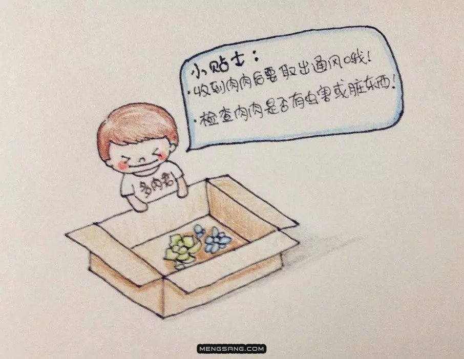
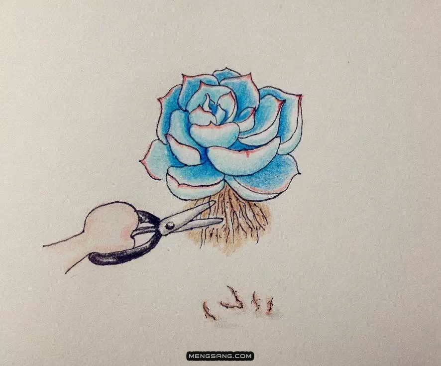
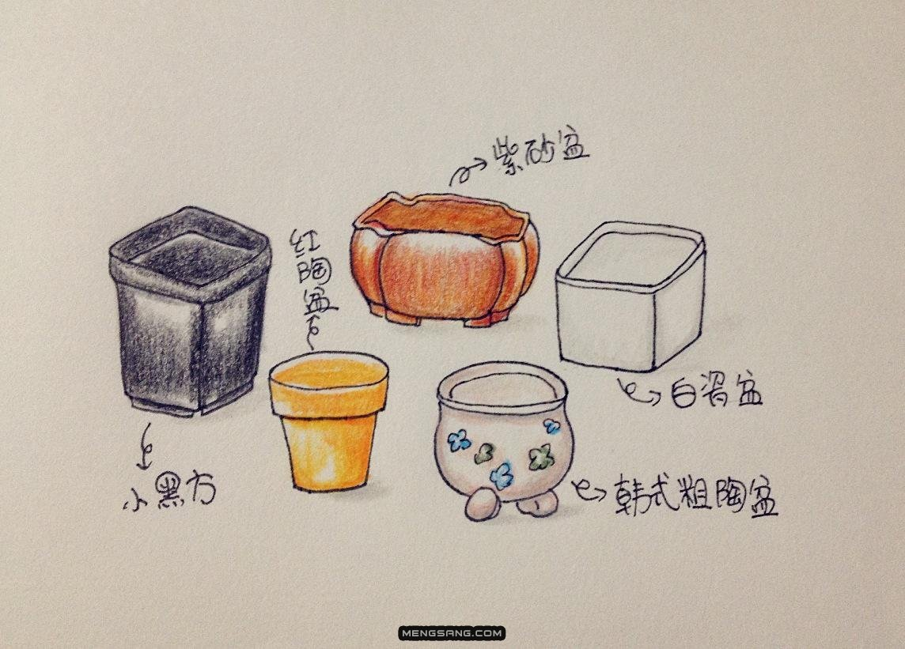

检查

1、如果你是通过网购途径购买脱土的肉肉，收到货一定要及时打开包裹，把肉肉通风，特别是夏天，不然黑腐可不是件小事。之后要检查肉肉是否有虫子或者其他脏东西，如果有虫害（特别是粉根介），须要立即清除，杜绝虫源入侵。另外还需检查肉肉的茎和叶是否有病斑或者黑腐，如果有的话，那么就要联系卖家退换货，新手对不健康的肉肉要坚决说no！
2、如果你是在实体店买肉肉，同样也要对肉肉进行检查，一般大棚出来的肉肉都是经过杀虫灭菌处理的，所以大可不必恐慌。原来的植料要不要保留随你，带土移植一般可以提高成活率。
修根
裸根的肉肉到手后，需要进行简单的修根处理，把多余的土抖掉，去掉干瘪腐烂的叶片和须根，保留主根就行了，伤口可以用干硫磺粉涂抹，也可以放到阴凉通风处晾干一两天，使得伤口愈合，避免伤口感染而黑腐。
选盆

在晾根的时候你就可以准备盆和土啦，选盆对新手来说，一般有以下选择：
1、“小黑方”：小黑方价格便宜，整齐划一，适合一个萝卜一个坑的种植，可以节省阳台空间。
2、“红陶盆”：红陶盆价格也便宜，透气性良好，度夏有保证，因为水分散逸较快，所以对新手来说不是那么好控制浇水。
3、“紫砂盆”：透水透气性极佳的紫砂盆也是新手的首选，古朴的造型搭配老桩非常和谐，但是价格相对较昂贵。
4、“韩式粗陶盆”：现在不仅是韩国景天大举入侵，韩国风格的盆子也逐渐成为主流，一般都是外壁上釉，内部为粗陶胚子，有利于透气。
5、“白瓷盆”：白瓷盆透气性差，不合理控制浇水的话，容易造成土壤积水，所以对新手来说是有难度的。
盆器多种多样，一双旧靴子，一个铁皮盒都可以成为肉肉们的新家，总之选盆要具体情况具体分析，根据肉肉的品种，家里的环境，配土的成分进行选择，一般要遵循：“透水性好、底部有孔”。
...此处省略3000字
粗砂是什么呢？
大家装修家里的时候会买很多水泥和沙子吧~ 用来抹水泥贴瓷砖的沙子是筛过的细沙，粗砂是筛细沙后淘汰下来的，一般沙场会直接扔掉，不过也有直接卖粗砂的。直接问卖沙的人就知道啦！一定要河沙，不要用海沙！国内部分地区河流边上也会有很多粗砂，甚至山上的风化岩也可以直接用来当粗砂使用。但这些材料由于采集自大自然，难免会有许多的微生物和病菌，所以在混土时尽量加入一些多菌灵一起混合，比例随意。（注意多菌灵只是预防作用，已经生病的植物喷洒多菌灵是没有效果的，也不能杀虫。）
为什么要用椰糠和泥炭土混合物，直接用泥炭土不行吗？
大家都知道泥炭土不环保（采集自湿地），全球都在减少用量。经过几年使用后发现它的效果的确比椰糠要好很多，如果单用椰糠，多肉植物的后期生长会有很多局限。根系脆弱，容易僵苗，夏季容易腐烂等。使用泥炭土则会好很多。两者混合使用的效果比单用泥炭土更加，但是椰糠比例不能太多，所以变成了现在的椰糠30%+泥炭土70%的混合方式。
测试3
此处省略1万字
测试4
此处省略1万字
测试5
此处省略1万字